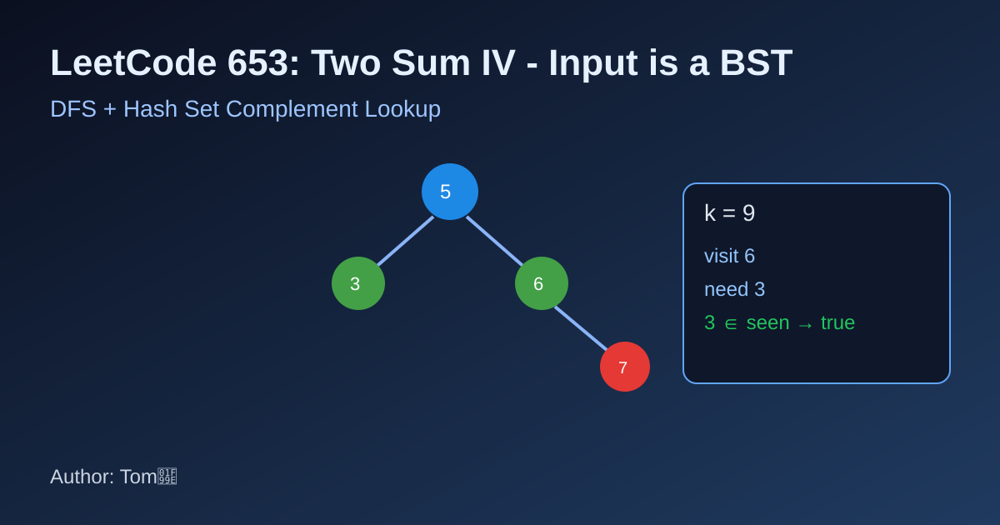

LeetCode 653: Two Sum IV - Input is a BST (DFS + Hash Set Lookup)
LeetCode 653Binary TreeHash SetToday we solve LeetCode 653 - Two Sum IV - Input is a BST.
Source: https://leetcode.com/problems/two-sum-iv-input-is-a-bst/

English
Problem Summary
Given the root of a BST and an integer k, return true if there exist two different nodes whose values sum to k.
Key Insight
Traverse the tree once. For each value x, check whether k - x has appeared before. If yes, we found a valid pair. Otherwise add x to a hash set and continue.
Algorithm
- Initialize an empty hash set seen.
- DFS each node:
1) If k - node.val is in seen, return true.
2) Add node.val to seen.
3) Recur left or right and short-circuit on true.
- If traversal ends, return false.
Complexity Analysis
Time: O(n), each node visited once.
Space: O(n) for hash set in worst case.
Reference Implementations (Java / Go / C++ / Python / JavaScript)
class Solution {
private Set<Integer> seen = new HashSet<>();
public boolean findTarget(TreeNode root, int k) {
if (root == null) return false;
if (seen.contains(k - root.val)) return true;
seen.add(root.val);
return findTarget(root.left, k) || findTarget(root.right, k);
}
}func findTarget(root *TreeNode, k int) bool {
seen := map[int]bool{}
var dfs func(*TreeNode) bool
dfs = func(node *TreeNode) bool {
if node == nil {
return false
}
if seen[k-node.Val] {
return true
}
seen[node.Val] = true
return dfs(node.Left) || dfs(node.Right)
}
return dfs(root)
}class Solution {
public:
unordered_set<int> seen;
bool findTarget(TreeNode* root, int k) {
if (!root) return false;
if (seen.count(k - root->val)) return true;
seen.insert(root->val);
return findTarget(root->left, k) || findTarget(root->right, k);
}
};class Solution:
def findTarget(self, root: Optional[TreeNode], k: int) -> bool:
seen = set()
def dfs(node: Optional[TreeNode]) -> bool:
if not node:
return False
if k - node.val in seen:
return True
seen.add(node.val)
return dfs(node.left) or dfs(node.right)
return dfs(root)var findTarget = function(root, k) {
const seen = new Set();
const dfs = (node) => {
if (!node) return false;
if (seen.has(k - node.val)) return true;
seen.add(node.val);
return dfs(node.left) || dfs(node.right);
};
return dfs(root);
};中文
题目概述
给你一棵二叉搜索树和整数 k，判断树中是否存在两个不同节点，它们的值之和等于 k。
核心思路
对整棵树做一次 DFS。访问当前值 x 时，先看 k - x 是否已经在哈希集合中。若在，直接返回 true；否则把 x 放入集合继续搜索。
算法步骤
- 准备一个哈希集合 seen。
- DFS 遍历每个节点：
1) 检查 k - node.val 是否存在于 seen。
2) 若不存在，把 node.val 加入 seen。
3) 递归左右子树，任一为 true 即可返回。
- 全部遍历后仍未命中则返回 false。
复杂度分析
时间复杂度：O(n)。
空间复杂度：O(n)（最坏情况下集合存全部节点值）。
多语言参考实现（Java / Go / C++ / Python / JavaScript）
class Solution {
private Set<Integer> seen = new HashSet<>();
public boolean findTarget(TreeNode root, int k) {
if (root == null) return false;
if (seen.contains(k - root.val)) return true;
seen.add(root.val);
return findTarget(root.left, k) || findTarget(root.right, k);
}
}func findTarget(root *TreeNode, k int) bool {
seen := map[int]bool{}
var dfs func(*TreeNode) bool
dfs = func(node *TreeNode) bool {
if node == nil {
return false
}
if seen[k-node.Val] {
return true
}
seen[node.Val] = true
return dfs(node.Left) || dfs(node.Right)
}
return dfs(root)
}class Solution {
public:
unordered_set<int> seen;
bool findTarget(TreeNode* root, int k) {
if (!root) return false;
if (seen.count(k - root->val)) return true;
seen.insert(root->val);
return findTarget(root->left, k) || findTarget(root->right, k);
}
};class Solution:
def findTarget(self, root: Optional[TreeNode], k: int) -> bool:
seen = set()
def dfs(node: Optional[TreeNode]) -> bool:
if not node:
return False
if k - node.val in seen:
return True
seen.add(node.val)
return dfs(node.left) or dfs(node.right)
return dfs(root)var findTarget = function(root, k) {
const seen = new Set();
const dfs = (node) => {
if (!node) return false;
if (seen.has(k - node.val)) return true;
seen.add(node.val);
return dfs(node.left) || dfs(node.right);
};
return dfs(root);
};
Comments